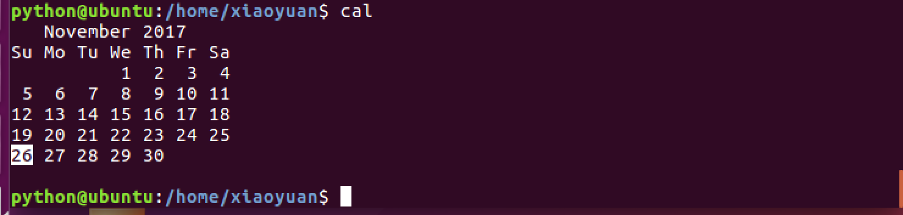

<1>查看当前日历：cal
cal命令用于查看当前日历，-y显示整年日历：


<2>显示或设置时间：date

设置时间格式（需要管理员权限）：
date [MMDDhhmm[[CC]YY][.ss]] +format
CC为年前两位yy为年的后两位，前两位的mm为月，后两位的mm为分钟，dd为天，hh为小时，ss为秒。如： date 010203042016.55。
显示时间格式（date '+%y,%m,%d,%H,%M,%S'）：
format格式 | 含义 |
%Y，%y | 年 |
%m | 月 |
%d | 日 |
%H | 时 |
%M | 分 |
%S | 秒 |

<3>查看进程信息：ps
进程是一个具有一定独立功能的程序，它是操作系统动态执行的基本单元。
ps命令可以查看进程的详细状况，常用选项(选项可以不加“-”)如下：
选项 | 含义 |
-a | 显示终端上的所有进程，包括其他用户的进程 |
-u | 显示进程的详细状态 |
-x | 显示没有控制终端的进程 |
-w | 显示加宽，以便显示更多的信息 |
-r | 只显示正在运行的进程 |

<4>动态显示进程：top
top命令用来动态显示运行中的进程。top命令能够在运行后，在指定的时间间隔更新显示信息。可以在使用top命令时加上-d 来指定显示信息更新的时间间隔。
在top命令执行后，可以按下按键得到对显示的结果进行排序：
按键 | 含义 |
M | 根据内存使用量来排序 |
P | 根据CPU占有率来排序 |
T | 根据进程运行时间的长短来排序 |
U | 可以根据后面输入的用户名来筛选进程 |
K | 可以根据后面输入的PID来杀死进程。 |
q | 退出 |
h | 获得帮助 |

<5>终止进程：kill
kill命令指定进程号的进程，需要配合 ps 使用。
使用格式：
kill [-signal] pid
信号值从0到15，其中9为绝对终止，可以处理一般信号无法终止的进程。
kill 9133 ：9133 为应用程序所对应的进程号


有些进程不能直接杀死，这时候我们需要加一个参数“ -9 ”，“ -9 ” 代表强制结束：
<6>关机重启：reboot、shutdown、init
命令 | 含义 |
reboot | 重新启动操作系统 |
shutdown –r now | 重新启动操作系统，shutdown会给别的用户提示 |
shutdown -h now | 立刻关机，其中now相当于时间为0的状态 |
shutdown -h 20:25 | 系统在今天的20:25 会关机 |
shutdown -h +10 | 系统再过十分钟后自动关机 |
init 0 | 关机 |
init 6 | 重启 |
<7>检测磁盘空间：df
df命令用于检测文件系统的磁盘空间占用和空余情况，可以显示所有文件系统对节点和磁盘块的使用情况。
选项 | 含义 |
-a | 显示所有文件系统的磁盘使用情况 |
-m | 以1024字节为单位显示 |
-t | 显示各指定文件系统的磁盘空间使用情况 |
-T | 显示文件系统 |

<8>检测目录所占磁盘空间：du
du命令用于统计目录或文件所占磁盘空间的大小，该命令的执行结果与df类似，du更侧重于磁盘的使用状况。
du命令的使用格式如下： du [选项] 目录或文件名
选项 | 含义 |
-a | 递归显示指定目录中各文件和子目录中文件占用的数据块 |
-s | 显示指定文件或目录占用的数据块 |
-b | 以字节为单位显示磁盘占用情况 |
-l | 计算所有文件大小，对硬链接文件计算多次 |

<9>查看或配置网卡信息：ifconfig
如果，我们只是敲：ifconfig，它会显示所有网卡的信息：

<10>测试远程主机连通性：ping

显示参数：
PID（Process ID）：进程标示号。
USER：进程所有者的用户名。
PR：进程的优先级别。
NI：进程的优先级别数值。
VIRT：进程占用的虚拟内存值。
RES：进程占用的物理内存值。
SHR：进程使用的共享内存值。
S：进程的状态，其中S表示休眠，R表示正在运行，Z表示僵死状态，N表示该进程优先值是负数。
%CPU：该进程占用的CPU使用率。
%MEM：该进程占用的物理内存和总内存的百分比。
TIME＋：该进程启动后占用的总的CPU时间。
Command：进程启动的启动命令名称，如果这一行显示不下，进程会有一个完整的命令行。